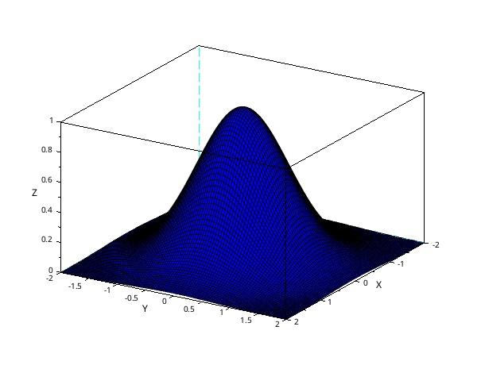

Scilab sphere
deff

Water analysis
A(0,100), B(0,0), C(10,30).
Results of water analysis for :
A(0,100) is 300U, U : Units
B(0,0) is 700U
C(30,30), what is likely the value at C ?
We can say the nearest to A, the nearest to A's value. So, we can say :